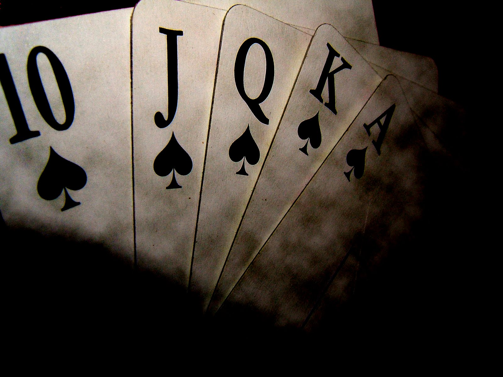
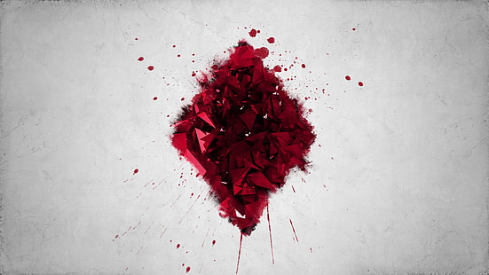
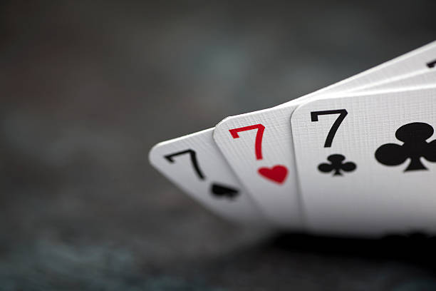
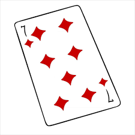
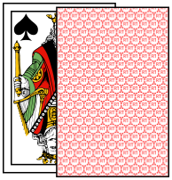

-

Les Régles
Le but de la chkobba est d'être le premier à marquer un nombre de points convenu à l'avance. À chaque tour, chaque joueur ne joue qu'une carte à la fois. Lorsqu'il ne reste plus de cartes à jouer, la manche est terminée et les points sont comptés. Si aucun joueur n'a atteint le nombre de points requis pour gagner, une nouvelle manche commence.
Distribution des cartes
L'un des deux joueurs mélange les cartes et présente le paquet à son adversaire qui le coupe et tire une carte.
Ce dernier peut garder la carte ou la poser sur le plateau (généralement une simple table).
Ensuite, le premier joueur commence la distribution en suivant la décision du tireur.
Si celui-ci a gardé la première carte, le distributeur lui en donne deux autres, puis il s'en donne trois et finit par déposer quatre cartes sur la table.
En revanche, si le tireur pose la première carte sur la table, le distributeur en rajoute trois, puis distribue trois cartes à son adversaire et trois à lui-même.
Le jeu commence donc avec quatre cartes sur la table et trois dans la main de chaque joueur.
Après la distribution, si trois cartes de même valeur sont sur le plateau, la distribution est à refaire.
Cela évite que ces cartes ne soient imprenables et restent sur le tapis du début à la fin.
Jeu
Il existe deux manières de faire le pli (أكل akala ou manger
en arabe) :
On peut manger une carte de même valeur à l'une des siennes. Les deux cartes sont alors conservées face cachée dans un tas.
On peut aussi manger par addition : si un joueur possède une dame et que sur le plateau sont présents un 7 et un as, il peut prendre le tout et le déposer face cachée dans son tas.
Une addition ne se fait que si le joueur possède la somme exacte entre les mains et que les termes de l'addition sont sur le plateau.
Ainsi, si le joueur possède un 7 et un as, il ne peut les jouer en même temps pour prendre une dame.
Décompte des points
Le but du jeu est de marquer le premier un minimum de 11, 21 ou 31 points, les joueurs décidant au préalable jusqu'à quel nombre ils souhaitent aller. Il existe deux sortes de points : les quatre points finaux, qui se comptent à la fin de chaque manche, et les chkobba qui peuvent se gagner pendant le déroulement de chaque manche.
Quatre points finaux
Les quatre points finaux se nomment kārṭa كارطة, dīnārī ديناري, barmīla برميلة et sabʿa l-ḥayya سبعة الحيّة. Ils sont départagés entre les joueurs à la fin de chaque manche selon leurs règles propres :
- Kārṭa donne un point à celui qui a le plus de cartes dans son tas. S'il y a égalité, personne ne marque.
- Dīnārī donne un point à celui qui a le plus de carreaux dans son tas. S'il y a égalité, personne ne marque.
- Barmīla (de l'italien primiera) donne un point à celui qui a le plus de 7 dans son tas. S'il y a égalité, on compte le nombre de 6. S'il y a encore égalité, personne ne marque.
- Sabʿa l-ḥayya donne un point à celui possède le 7 de carreau. À l'exception des chkobba, cette dernière carte est la seule qui, à elle seule, fait marquer un point, d'où l'aspect psychologique lié à cette carte et à sa prise. La possession de trois 7 dont le 7 de carreau donne donc deux points (sabʿa l-ḥayya et barmīla) à leur détenteur.
-
Les chkobba sont des points exceptionnels marqués pendant la partie elle-même selon une règle simple :
à chaque fois que, par la prise d'une ou plusieurs cartes, un joueur vide le plateau en son entier, il marque un point.
Pour se souvenir de ces points lors du décompte final, on pose la carte qui a servi à faire la chkobba face exposée sur son tas.
On ne peut faire de chkobba à la fin du dernier tour d'une manche.
-

-

-

-
